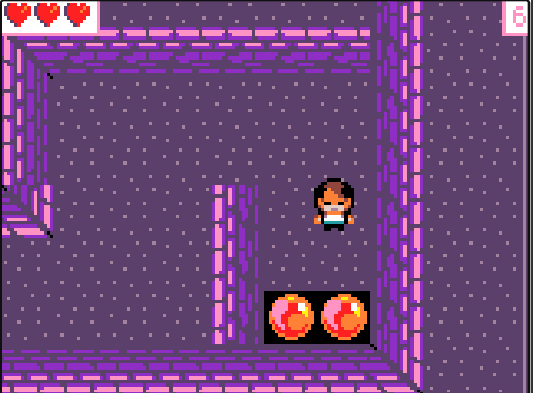
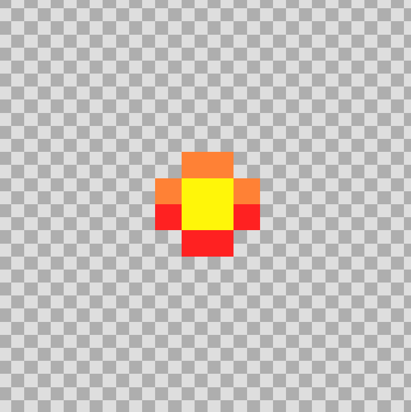

| Izena | Argazkia | Azalpena |
|---|---|---|
| Bihotza hartu |  |
Bihotz hau tipo janarikoa da, lehenengo edo bigarren azaldu daiteke baino bakarrik bat dago, bihotz hau egiten duena da, pertsonai nagusia hiru bizitzarekin azaltzen da ordun, pertsonai nagusia bihotza ikutzen edo hartzen badu, bizitza bat gehituko zaio. |
| Gordetzeko puntua |  |
Gordetzeko puntua, kuadradito urdin batzuk dira, lehenengo eta bigarren mapan agertzen direla, beraien funtzioa dira, pertsonai nagusia ikutzerakoan eta etsai bat iktzen badio pertsonai nagusiari, ikututako kuadradito urdinetik azalduko da. Check point bat bezalakoa da. |
| Portala sartzeko beste mapara |  |
Portal hau, lehenengo mapan jarrita daude, bolita gorri batzuk dira eta bere funtzioa da pertsonai nagusia lehenengo mapako puntu guztiak lortutakoan, beheraka joaten da eta bolita gorrietan ikutu eta bigarren mapan azalduko da. |
| Pertsonai nagusia vs saguzarra |  |
Pertsonai nagusia lehenengo mapako puntu guztiak lortu dituenean eta bigarren mapan dagoenean. Bi etsai gehiago azalduko zaio bat izango dela saguzarra. Saguzar honek statusbar dauka, jolasa entrenigarriago izateko eta disparo asko eman behar diozu hiltzeko. Jolasa bukatzeko edo irabazteko, lehenengoko eta bigarreneko mapan etsai eta puntu guztiak lortu behar dituzu 16 puntu lortu arte. |
| Projektile |  |
Projektile hauek, pertsonai nagusiari jarri dizkiot eta bere funtzioa da, etsaika hiltzea bai lehenengo mapan eta bai bigarrenen ere. Pertsonai nagusiaren gorputza mugitzen denean, ere projektilen norabidea aldatuko da. |
Itzuli nagusira